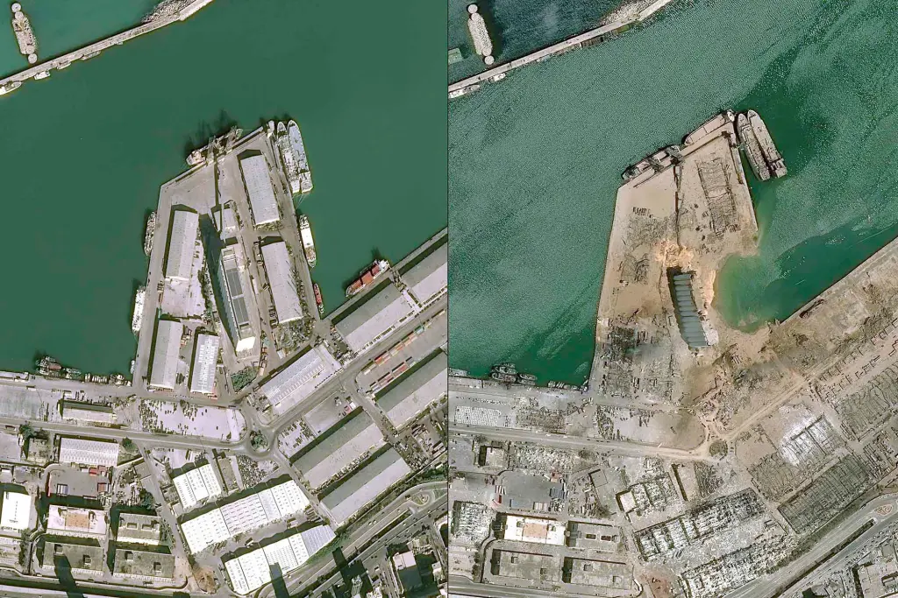

Technology, Infrastructure, and Environmental Impact
The Port of Beirut is one of Lebanon's most important pieces of infrastructure. Located along the Mediterranean coast in Beirut, it serves as a major center for shipping, trade, and economic activity.
On August 4, 2020, approximately 2,750 tons of ammonium nitrate stored at the port exploded. The blast destroyed large sections of the port and surrounding neighborhoods, causing widespread human, economic, and environmental damage.
This project explores the Beirut Port as an example of the intersection between technology and the environment. Through images, maps, and investigative media, it examines how infrastructure can affect both human and non-human communities.
